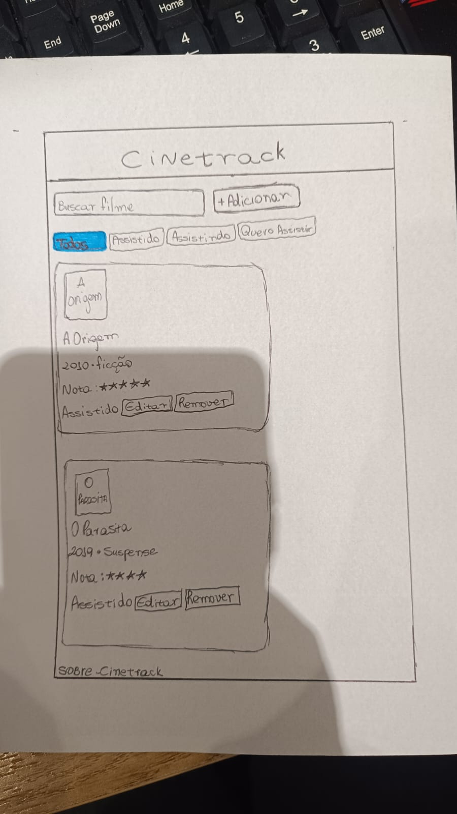

O que é o CineTrack
O CineTrack é um gerenciador pessoal de listas de filmes: você registra o que já assistiu, o que está assistindo e o que quer assistir, dá uma nota de 1 a 5 estrelas e deixa um comentário. Os dados ficam salvos no próprio navegador.
Filmes de exemplo
| Título | Ano | Gênero | Status |
|---|---|---|---|
| A Origem | 2010 | Ficção científica | Assistido |
| Parasita | 2019 | Suspense | Assistido |
| O Auto da Compadecida | 2000 | Comédia | Assistido |
| Duna: Parte Dois | 2024 | Ficção científica | Assistindo |
| Interestelar | 2014 | Ficção científica | Quero assistir |
| Cidade de Deus | 2002 | Drama | Quero assistir |
Rascunho da tela

Como os dados são organizados
Cada filme do CineTrack possui os seguintes campos:
- Título
- Ano de lançamento
- Gênero
- Pôster (URL da imagem de capa)
- Nota (de 1 a 5 estrelas)
- Status (assistido, assistindo ou quero assistir)
- Comentário (opcional)